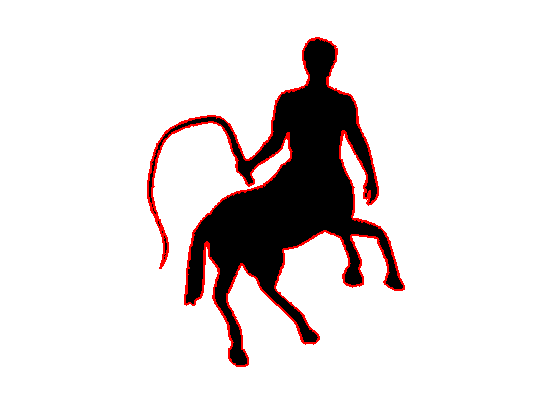
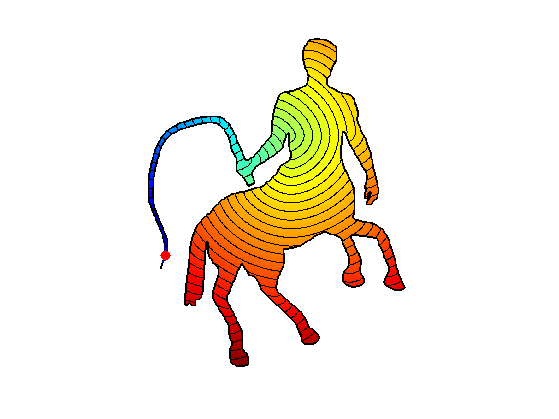
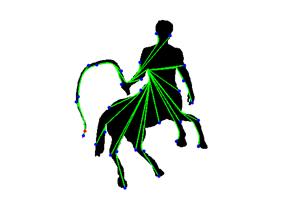
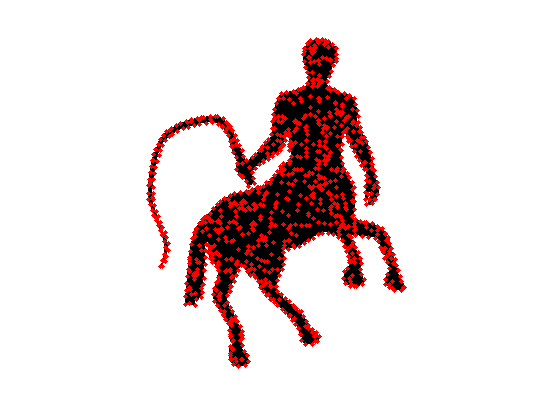
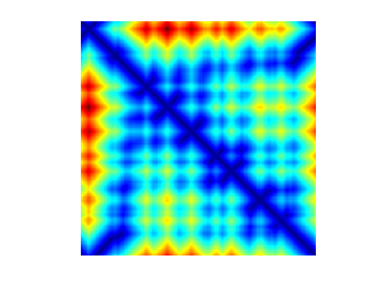
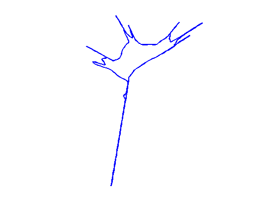
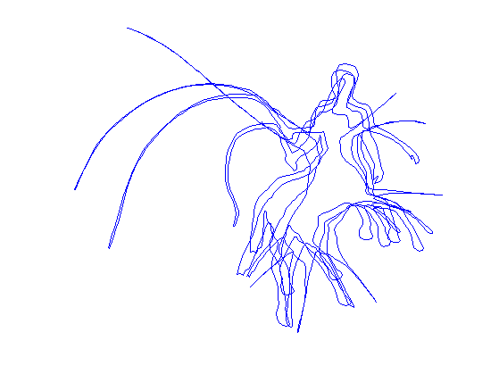
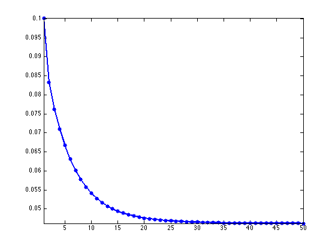
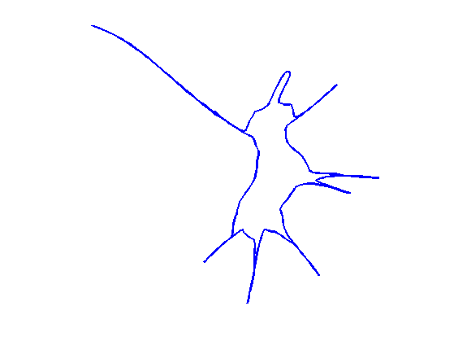

Geodesic Bending Invariants for Shapes
This tour explores the computation of bending invariants of shapes.
Contents
Installing toolboxes and setting up the path.
You need to download the following files: signal toolbox, general toolbox and graph toolbox.
You need to unzip these toolboxes in your working directory, so that you have toolbox_signal, toolbox_general and toolbox_graph in your directory.
For Scilab user: you must replace the Matlab comment '%' by its Scilab counterpart '//'.
Recommandation: You should create a text file named for instance numericaltour.sce (in Scilab) or numericaltour.m (in Matlab) to write all the Scilab/Matlab command you want to execute. Then, simply run exec('numericaltour.sce'); (in Scilab) or numericaltour; (in Matlab) to run the commands.
Execute this line only if you are using Matlab.
getd = @(p)path(p,path); % scilab users must *not* execute this
Then you can add the toolboxes to the path.
getd('toolbox_signal/'); getd('toolbox_general/'); getd('toolbox_graph/');
Bending Invariants
Bending invariants replace the position of the vertices in a shape \(\Ss\) (2-D or 3-D) by new positions that are insensitive to isometric deformation of the shape. This defines a bending invariant signature that can be used for surface matching.
Bending invariant were introduced in [EladKim03]. A related method was developped for brain flattening in [SchwShWolf89]. This method is related to the Isomap algorithm for manifold learning [TenSolvLang03].
We assume that \(Ss\) has some Riemannian metric, for instance coming from the embedding of a surface in 3-D Euclidian space, or by restriction of the Euclian 2-D space to a 2-D sub-domain (planar shape). One thus can compute the geodesic distance \(d(x,x')\) between points \(x,x' \in \Ss\).
The bending invariant \(\tilde \Ss\) of \(\Ss\) is defined as the set of points \(Y = (y_i)_j \subset \RR^d\) that are optimized so that the Euclidean distance between points in \(Y\) matches as closely the geodesic distance between points in \(X\), i.e. \[ \forall i, j, \quad \norm{y_i-y_j} \approx d(x_i,x_j) \]
Multi-dimensional scaling (MDS) is a class of method that aims at computing such a set of points \(Y \in \RR^{d \times N}\) in \(\RR^d\) such that \[ \forall i, j, \quad \norm{y_i-y_j} \approx \de_{i,j} \] where \(\de \in \RR^{N \times N}\) is a input data matrix. For a detailed overview of MDS, we refer to the book [BorgGroe97]
In this tour, we apply two specific MDS algorithms (strain and stress minimization) with input \(\de_{i,j} = d(x_i,x_j)\).
2-D Shapes
We consider here the case where \(\Ss\) is a sub-domain of \(\RR^2\).
A binary shape \(\Ss\) is represented as a binary image \(S \in \RR^Q\) of \(Q=q \times q\) pixels.
clear options; q = 400; name = 'centaur1'; S = load_image(name,q); S = perform_blurring(S,5); S = double( rescale( S )>.5 ); if S(1)==1 S = 1-S; end
Compute its boundary \(b = (b_i)_{i=1}^L \in \RR^{2 \times L}\).
b = compute_shape_boundary(S); L = size(b,2);
Display the shape.
lw = 2; clf; hold on; imageplot(-S); plot(b(2,:), b(1,:), 'r', 'LineWidth', lw); axis ij;
Geodesic Distance
We consider the geodesic distance obtained by contraining the shortest curve to be inside \(\Ss\) \[ d(x,x') = \umin{ \ga } \int_0^1 \abs{\ga'(t)} d t, \] where \(\ga\) should satisfy \[ \ga(0)=x, \quad \ga(1)=x' \qandq \forall t \in [0,1], \: \ga(t) \in \Ss. \]
The geodesic distance map \(U(x) = d(x,x_0)\) to a starting point \(x_0\) can be computed in \(O(q^2 \log(q))\) operations on a grid of \(q \times q\) points using the Fast Marching algorithm.
Design a constraint map for the Fast-Marching, to enforce the propagation inside the shape.
S1 = perform_convolution(S, ones(3)/9)<.01; S1=double(S1==0); C = zeros(q)-Inf; C(S1==1) = +Inf; options.constraint_map = C;
Shortcut to compute the geodesic distance to some point \(x\).
geod = @(x)perform_fast_marching(ones(q), x, options);
Compute the geodesic distance to a point \(x\)
x = [263; 55]; options.nb_iter_max = Inf; U = geod(x);
Display the distance and geodesic curves.
clf; options.display_levelsets = 1; options.pstart = x; options.nbr_levelsets = 60; U(S==0) = Inf; display_shape_function(U, options);
Exercice 1: (check the solution) Compute curves joining the start point to several points along the boundary.
exo1;
Geodesic Distance Matrix
We define a set \(X = (x_i)_{i=1}^n \in \RR^{2 \times N} \subset \Ss\) of sampling points.
Total number \(N\) of sampling points.
N = 1000;
The sampling is made of \(N_0\) points on the boundary \(b\), and \(N-N_0\) points inside the shape \(\Ss\).
Number of points on the boundary.
N0 = round(.4*N);
Sampling on the boundary.
I = round(linspace(1,L+1,N0+1)); X = round(b(:,I(1:end-1)));
Add \(N-N_0\) points inside the shape.
[y,x] = meshgrid(1:q,1:q); I = find(S==1); I = I(randperm(length(I))); I = I(1:N-N0); X(:,end+1:N) = [x(I),y(I)]';
Display the sampling points.
clf; hold on; imageplot(1-S); plot(X(2,:), X(1,:), 'r.', 'MarkerSize', 15); axis('ij');
The geodesic distance matrix \(\de \in \RR^{N \times N}\) is defined as \[ \forall i,j=1,\ldots,N, \quad \de_{i,j} = d(x_i,x_j). \]
Exercice 2: (check the solution) Compute the geodesic distance matrix \(\de\).
exo2;
Display the geodesic matrix for \(1 \leq i,j \leq N_0\) (points along the boundary \(b\)).
clf; imageplot(delta(1:N0,1:N0)); colormap(jet(256));
Bending Invariant with Strain Minimization
The goal is to compute a set of points \(Y = (y_i)_{i=1}^N\) in \(\RR^d\), (here we use \(d=2\)) stored in a matrix \(Y \in \RR^{d \times N}\) such that \[ \forall i, j, \quad D^2(Y)_{i,j} \approx \de_{i,j}^2 \qwhereq D^2(Y)_{i,j} = \norm{y_i-y_j}^2. \]
This can be achieved by minimzing a \(L^2\) loss \[ \umin{Y} \norm{ D^2(Y)-\de^2 }^2 = \sum_{i<j} \abs{ \norm{y_i-y_j}^2 - \de_{i,j}^2 }^2. \]
Strain minimization consider instead the following weighted \(L^2\) loss (so-called strain) \[ \umin{Y \in \RR^{d \times N} } \text{Strain}(Y) = \norm{ J ( D^2(Y)-\de^2 ) J }^2 \] where \(J\) is the so-called centering matrix \[ J_{i,j} = \choice{ 1-1/N \qifq i=j, \\ -1/N \qifq i \neq j. }\]
J = eye(N) - ones(N)/N;
Using the properties of squared-distance matrices \(D^2(Y)\), one can show that \[ \norm{ J ( D^2(Y)-\de^2 ) J }^2 = \norm{ Y Y^* - K }^2 \qwhereq K = - \frac{1}{2} J \de^2 J. \]
K = -1/2 * J*(delta.^2)*J;
The solution to this (non-convex) optimization problem can be computed exactly as the rows of \(Y\) being the two leading eigenvectors of \(K\) propery rescaled.
opt.disp = 0;
[Y, v] = eigs(K, 2, 'LR', opt);
Y = Y .* repmat(sqrt(diag(v))', [N 1]);
Y = Y';
Extract the boundary part of the mapped data. Rotate the shape if necessary.
theta = -.8*pi; uv = Y(:,1:N0); uv = [cos(theta)*uv(1,:) + sin(theta)*uv(2,:); - sin(theta)*uv(1,:) + cos(theta)*uv(2,:)];
Display the bending invariant boundary.
clf; h = plot(uv(2,:), uv(1,:)); axis('ij'); axis('equal'); axis('off'); set(h, 'LineWidth', lw);
Bending Invariant with Stress Minimization
The stress functional does not have geometrical meaning. An alternative MDS method directly minimizes a geometric loss, the so-called Stress \[ \umin{Y \in \RR^{d \times N} } \text{Stress}(Y) = \norm{ D(Y)-\de }^2 = \sum_{i<j} \abs{ \norm{y_i-y_j} - \de_{i,j} }^2. \] It is possible to find a local minimizer of this energy by various descent algorithms, as initially proposed by [Kruskal64]
Stress = @(d)sqrt( sum( abs(delta(:)-d(:)).^2 ) / N^2 );
Operator to compute the distance matrix \(D(Y)\).
D = @(Y)sqrt( repmat(sum(Y.^2),N,1) + repmat(sum(Y.^2),N,1)' - 2*Y'*Y);
The SMACOF (Scaling by majorizing a convex function) algorithm solves at each iterations a quadratic energy, that is guaranteed to diminish the value of the Strain. It was introduced by [Leeuw77]
It computes iterates \(X^{(\ell)}\) as \[ X^{(\ell+1)} = \frac{1}{N} X^{(\ell)} B(D(X^{(\ell)}))^*, \] where \[ B(D) = \choice{ -\frac{\de_{i,j}}{D_{i,j}} \qifq i \neq j, \\ -\sum_{k} B(D)_{i,k} \qifq i = j. } \]
Initialize the positions for the algorithm.
Y = X/q;
Operator \(B\).
remove_diag = @(b)b - diag(sum(b)); B = @(D1)remove_diag( -delta./max(D1,1e-10) );
Update the positions.
Y = Y * B(D(Y))' / N;
Exercice 3: (check the solution) Perform the SMACOF iterative algorithm. Save in a variable s(l) the values of Stress\(( X^{(\ell)} )\).
exo3;
Plot stress evolution during minimization.
clf; plot(s, '.-', 'LineWidth', 2, 'MarkerSize', 20); axis('tight');
Plot the optimized invariant shape.
clf; h = plot(Y(2,[1:N0 1]), Y(1,[1:N0 1])); axis('ij'); axis('equal'); axis('off'); set(h, 'LineWidth', lw);
Shape Retrieval with Bending Invariant.
One can compute a bending invariant signature for each shape in a library of images.
Isometry-invariant retrival is then perform by matching the invariant signature.
Exercice 4: (check the solution) Implement a shape retrival algorithm based on these bending invariants.
exo4;
Bibliography
- [EladKim03] A. Elad and R. Kimmel, On bending invariant signatures for surfaces, IEEE Transactions onPattern Analysis and Machine Intelligence, Vol. 25(10), p. 1285-1295, 2003.
- [SchwShWolf89] E.L. Schwartz and A. Shaw and E. Wolfson, A Numerical Solution to the Generalized Mapmaker's Problem: Flattening Nonconvex Polyhedral Surfaces, IEEE Transactions on Pattern Analysis and Machine Intelligence, 11(9), p. 1005-1008, 1989.
- [TenSolvLang03] J. B. Tenenbaum, V. de Silva and J. C. Langford, A Global Geometric Framework for Nonlinear Dimensionality Reduction, Science 290 (5500): 2319-2323, 22 December 2000
- [Kruskal64] J. B. Kruskal, Multidimensional scaling by optimizing goodness of fit to a nonmetric hypothesis, Psychometrika 29 (1): 1?27, 1964.
- [Leeuw77] J. de Leeuw, Applications of convex analysis to multidimensional scaling, in Recent developments in statistics, pp. 133?145, 1977
- [BorgGroe97] I. Borg and P. Groenen, Modern Multidimensional Scaling: theory and applications, New York: Springer-Verlag, 1997.